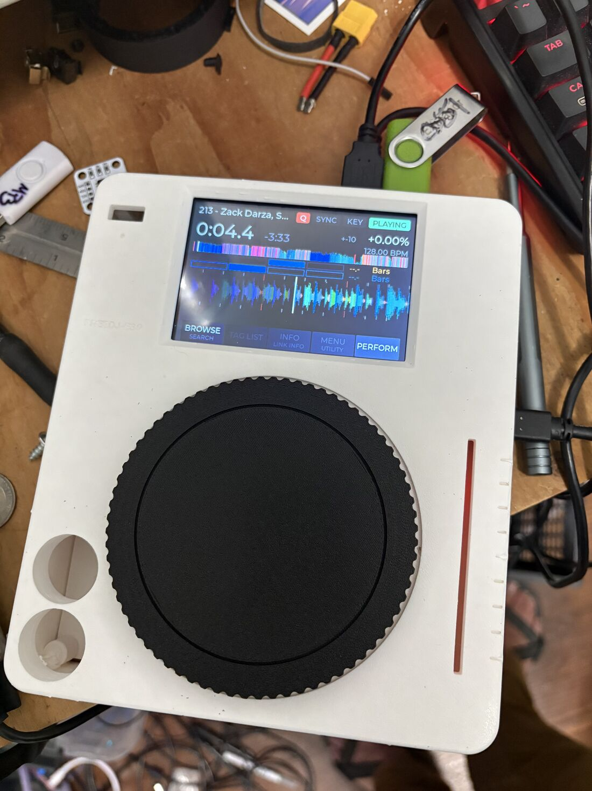
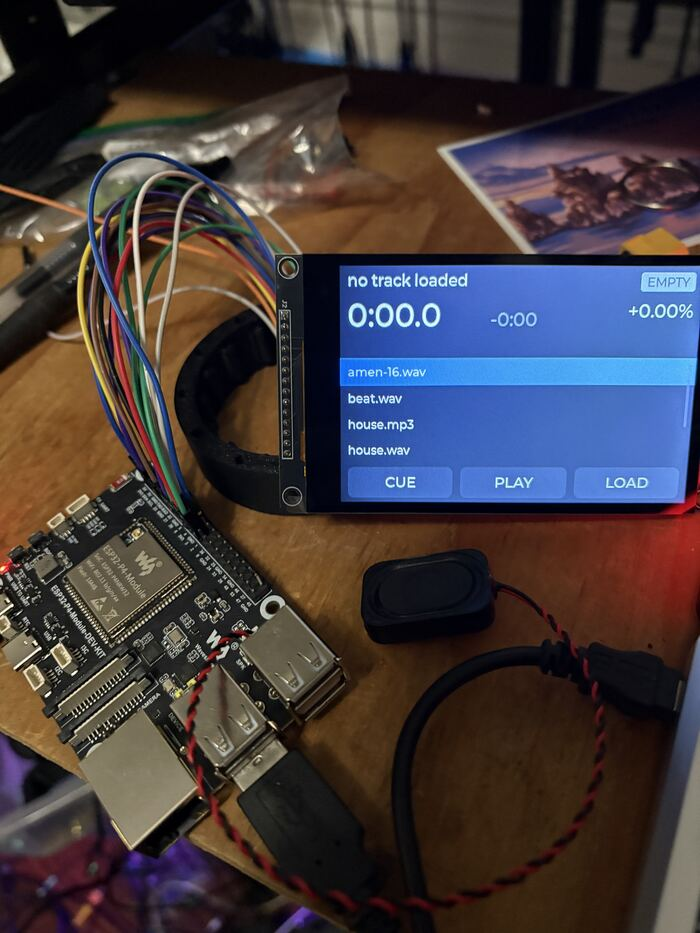
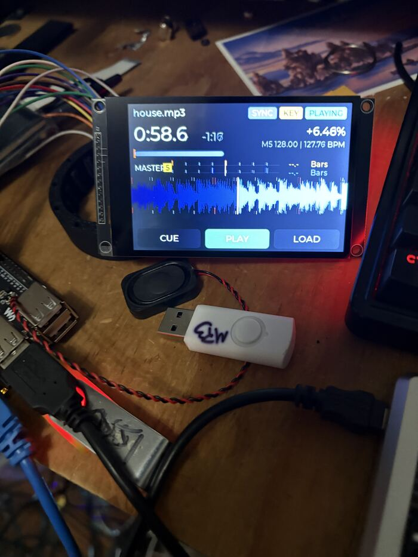
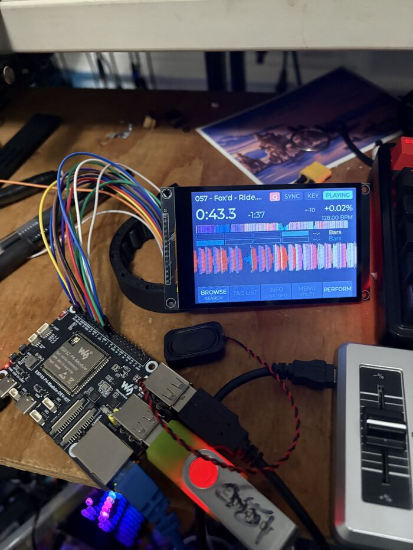
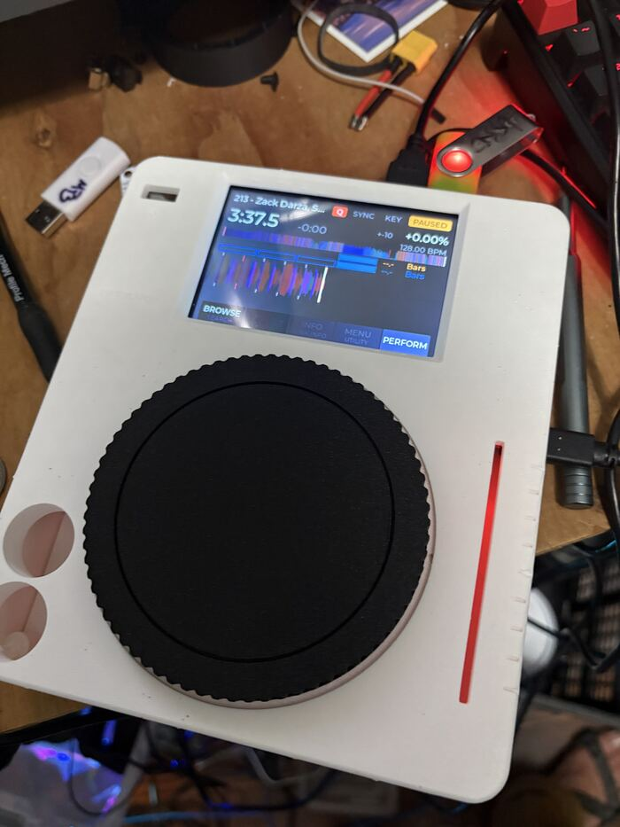
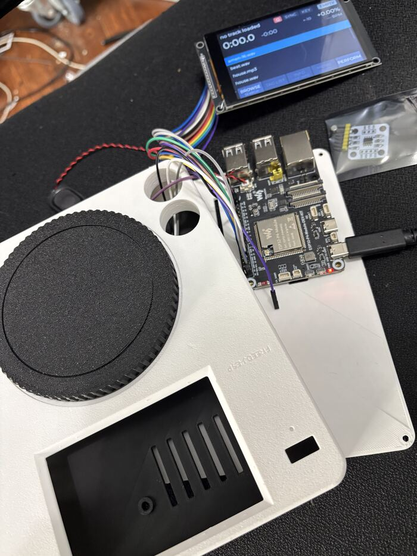

This is a little CDJ-style player you can make yourself. It's a dev board you can buy off the shelf, a 4" touch screen, and a jog wheel on a couple of skateboard bearings, in a case you print. Plug in your rekordbox USB stick and it plays your tracks with the waveforms, beat grids and cues you already set up. It even syncs with Pioneer players over Pro DJ Link.
If you've got a 3D printer and you've ever plugged an Arduino into a computer, you can build one.

No custom circuit boards. Everything is stuff you can order online.
Heads up: the step-by-step guide with photos and a parts list with links isn't done yet. I'm working on it now. Everything that exists so far (code, CAD files, notes) is on GitHub if you want to get a head start: github.com/audiodestrukt/freedj-esp. Questions? Check the FAQ.
Plays WAV and MP3 off a rekordbox stick or SD card, with rekordbox's colour waveforms, beat grids and hot cues. Pitch and key lock, cue, loops, beat jump, slip, reverse, and beat sync with other players. You can also hook up a Numark DJ2Go, or even an XDJ-1000MK2 over USB:
Coming later: playlists and track names from rekordbox, lit buttons, and a two deck version with a mixer.
Oct 29, first time the screen came up. Just jumper wires and a list of files.

A couple of days later it had a scrolling waveform and a pitch control.

Then I redid the screen to look like the XDJ's, with the rekordbox colour waveforms.

Into the printed case.

And opened back up to put the jog sensor in (it's still in the bag on the right).

If you want the nerdy details, I write them up on my blog:
There's a software version too, called freedj-3000. It runs on a Raspberry Pi, and on iPad and iPhone as OpenDeck DJ. Code: github.com/audiodestrukt/freedj-3000. (How that started.)
Build one and send me a photo. If something in the instructions is confusing, tell me. If you have a CDJ-3000, I'd love to know if sync works with it (test script). Bugs and ideas go in GitHub issues.
- Dan (audiodestrukt)
The code is GPL and the hardware files are CERN-OHL-S, so build it, change it, share it. The freedj name is mine though, so if you make your own version please call it something else. Not affiliated with Pioneer DJ / AlphaTheta.